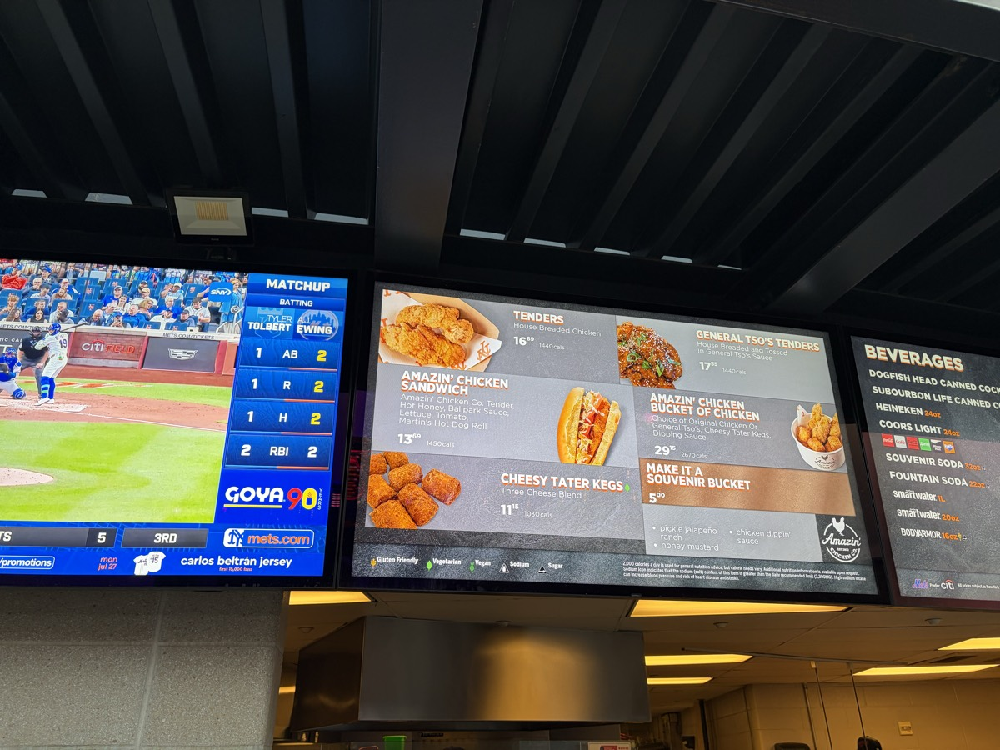

Your night at the Garden
There's no building in sports quite like it. Get there right, sit in the right seat, eat the right sandwich — and a Knicks night becomes the best crowd in the NBA. Here's exactly how to do it, in Jack's words and his photos.
Getting in
 Outside MSGOutside
Outside MSGOutsideBest ways in: walking, the subway, the LIRR, or NJ Transit. Driving would be my last choice.
When you get to the doors, come in through the 100 level gates — the merch store there has a way shorter line than the one in the MSG lobby.
 Gates
GatesBest seats
 The view100 Level
The view100 LevelFront rows in the 200s in the center sections beat behind the basket, even down low.
The Chase Bridge and the Hyundai Bridge are both cool spots — and the Hyundai Bridge is good value.
The Delta Club comes with all-inclusive food and drink (non-alcoholic).
 300 Level
300 Level 400 Level
400 LevelBest food
 Steak sandwichOutside Sec 107
Steak sandwichOutside Sec 107The best food in MSG is the steak sandwich outside section 107.
The hamburgers from the Garden Market are the best basic food item in sports. They use a different type of bun that is fantastic.
Carnegie Deli is another good one. Skip the pizza — it's bad in the arena.
 Garden Market
Garden Market
MenusBefore the game
 Chase LoungeChase Lounge
Chase LoungeChase LoungePregame spots nearby: Nick and Stef's Steakhouse, The Rutherford, Stout, Mustang Harry's, and American Whiskey.
There is a Chase reserve lounge inside the arena. You can reserve a spot pregame.
 Delta Club
Delta Club Bar
BarAtmosphere
 Best crowd in the NBAConcourse
Best crowd in the NBAConcourseBest crowd in the NBA. Be ready to stand, and the seats are tight between people. There aren't as many gimmicks as other NBA arenas, so it's not the most family-friendly — but there's still plenty of in-game entertainment like t-shirt tosses.
Insider tips
 Team storeTeam Store
Team storeTeam StoreThe merch store through the gates on the 100 level has a way shorter line than the one in the MSG lobby.
Alcoholic drinks are very expensive inside MSG. Budget for it.